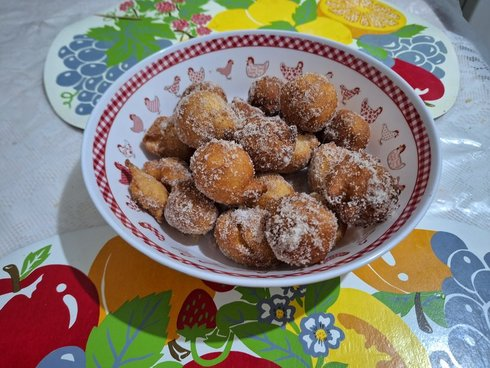

Bolinho de Chuva
Home

Description
Bolinho de Chuva is a traditional Brazilian treat made from a simple batter of flour, eggs, milk, and sugar. These small portions of dough are deep-fried until golden brown and then coated in cinnamon and sugar.
They are often described as 'Brazilian doughnut holes' or 'Brazilian beignets'. The name literally translates to 'rain cakes', as they are traditionally prepared on rainy afternoons to be enjoyed warm with coffee."
Ingredients
- 2 cups of all-purpose flour
- 2 eggs
- 1 cup of milk
- ½ cup of sugar
- 1 tablespoon of baking powder
- A pinch of salt
- Oil for frying
- Cinnamon and sugar for coating
Steps
- Mix the dough: In a large bowl, whisk the eggs and sugar until smooth. Gradually add the milk and flour, stirring constantly until you get a thick, creamy batter.
- Add leavening: Stir in the salt and the baking powder last, mixing gently.
- Heat the oil: Heat enough oil in a deep pan over medium heat. To test if it's ready, drop a tiny bit of batter; it should sizzle and float immediately.
- Fry the cakes: Using two spoons, scoop small portions of the dough and carefully drop them into the hot oil. Fry a few at a time until they are golden brown on all sides.
- Drain: Remove the "bolinhos" with a slotted spoon and place them on a plate lined with paper towels to remove excess oil.
- Coat and serve: While still warm, roll them in a mixture of cinnamon and sugar. Serve immediately.